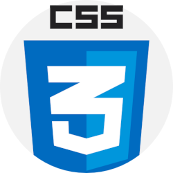
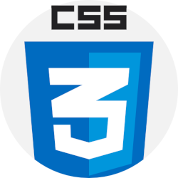

É possivel criar um paragrafo for meio das tags <p> e </p>
Para criar uma quebra de linha
em um lugar específico ultiliza a tag <br>,
pronto! foi feita uma line break
® © ™ € £ ¢ Δ ↖ ↑
entrar na https://emojipedia.org
copiar o codigo do emoj (apenas os símbulos depois do sinal de mais). Com o '&#x' antes do codigo
emojs: 🔥 💀
usar a tag <img> e encontrar o arquivo de imagem PNG ou JPEG e adicionar no src. O 'alt' serve como descrição da imagem
Lembre-se de baixar a sua imagem e deixa-la com um baixo consumo de espaço
 


Como colocar um favicon.ico no seu site
ir na head e adicionar o comando link e colocar a imagem.ico no href
Para colocar em negrito usar a tag B, como neste termo AQUI
para colocar em italico usar a tag I como neste termo, AQUI
Podemos colocar o texto marcado, com a tag MARK.
Aqui temos um texto pequeno
aqui temos um texto grande
Um texto deletado é representado DESSE JEITO, com a tag DEL
Um texto inserido é representado DESSE JETIO, com a tag INS
Para escrever textos comos este, X10x 5, usar a tag SUP
Para textos como este, H2O, usar a tag SUB
O comando print('teste') pode ser escrito como codigo usando o tag CODE
num = int(input('Digite um numero:'))
if num % 2 == 0:
print(f'O {num} é um numero impar')
else:
print(f'O {num} é um numero par')
print('Fim do programa')
Podemos fazer com que a tabulação seja mantida com a Tag PRE
Como dizia minha mãe: Na volta a gente compra
podemos fazer citações com a Tag Q
A sitação de de Mark Ruffalo diz que:
As alterações climáticas são a maior ameaça à nossa existência nesta
é a curta história do nosso planeta, ninguém vai fugir das suas consequências.
Passe o mouse por cima das abreviações SP e RJ, só é possivel ver o siginificado das abreviações graças a Tag ABBR